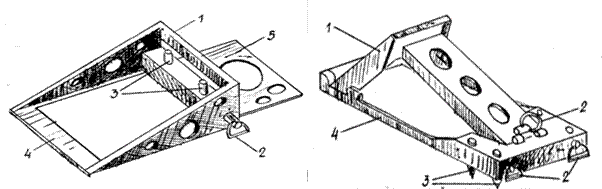
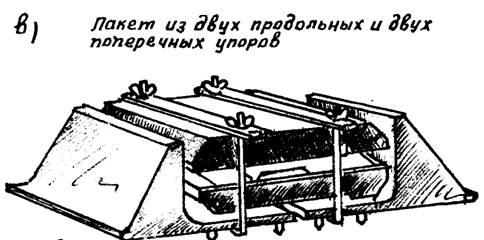
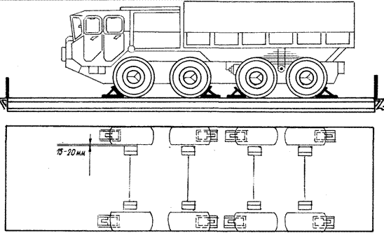

2. Подготовка машины к погрузке
3. Порядок размещения и закрепления колесной машины на платформе
Способ закрепления двухосных машин
Способ закрепления трехосных машин
Способ закрепления четырехосных машин
Способы закрепления над сцепом двухосных машин
Способы закрепления над сцепом трехосных машин
4. Подготовка погруженных машин к перевозке
Закрепление производят комплектами универсальных многооборотных креплений (УМК-I К и УМК-2К).

Рис. Универсальные многооборотные крепления (1-упор, 2-фиксатор, 3-штырь, 4-рамка, 5-опорная плита)
Способ № 1 (а) - Крепление колесных машин универсальными многооборотными креплениями
|
ТИП УМК |
Масса колесных машин, т |
Размеры комплекта, мм |
Количество штырей, шт
|
Размер штырей, шт длина*диаметр |
Масса комплекта, кг |
|
УМК-1К |
До15 |
480*200*280 |
2 в поперечных упорах; 4 в продольных |
45*10 |
36 |
|
УМК-2К |
15,1-26 |
540*245*280 |
2 в боковых упорах; 6 в продольных |
45*14 |
80 |
Способ № 1(б) - Крепление колесных машин универсальными многооборотными креплениями (УМК-1КМ, УМК-2 КМ)
|
ТИП УМК |
Масса машины, т |
Состав комплекта |
Габариты пакета, мм |
Масса комплекта, кг |
|
УМК – 1КМ |
1,5 – 16,0 |
4 продольных и 4 поперечных упора |
470*170*110 |
34 |
|
УМК – 2КМ |
16,1-24,0 |
570*210*140 |
64 |
|
|
Примечание: Машины массой 24,1 – 42,0 т закрепляют двумя комплектами УМК -2 |
||||
Машины массой отдельных единиц до 15 т закрепляют одним комплектом УМК-1К, массой 15,1 -26.т одним комплектом УМК-2К, а массой 26,1 -40 т двумя комплектами УМК-2К.
Для закрепления машин пакеты креплений разбирают, продольные и поперечные упоры переводят в рабочее положение.


Рис. Способ установки УМК
На всех продольных и поперечных упорах за кольцо вытягивают фиксаторы штырей на себя и поворачивают по ходу часовой стрелки, фиксатор продольного упора поворачивают против хода часовой стрелки. В крайнем положении фиксаторы автоматически становятся на внутреннюю защелку.
В этом положении фиксаторов штыри свободно перемещаются вверх-вниз.
Спереди (сзади) колес машины, размещенной на платформе, устанавливают по одному поперечному упору. Машина наезжает колесами на опорные плиты упоров и останавливается.
К колесам машины устанавливают продольные упоры.
Штыри продольных и поперечных упоров поочередно полностью забивают в пол платформы и закрепляют с помощью фиксаторов, как показано на рисунке ниже. Для этого за кольца немного вытягивают фиксаторы на себя и переводят их в первоначальное положение. Машина закреплена.

Рис. Установка продольного и поперечного упора УМК
При раскреплении допускается переезд машин через продольные упоры. После этого продольные и поперечные упоры снимают с помощью монтировки и складывают в пакеты.
В целях предотвращения разрушения упоров категорически запрещается:
— забивать зафиксированные штыри (при невытянутых фиксаторах);
— бить чем-либо тяжелым по корпусам упоров (кроме рас фиксированных штырей) при закреплении и раскреплении техники;
снимать упоры, находящиеся в контакте с колесами машины.
2. Подготовка машины к погрузке
Для закрепления колесной машины на платформе перед погрузкой необходимо:
— тщательно очистить от грязи, а зимой от снега и наледи;
— проверить исправность тормозной системы;
— привести в положение для транспортирования по железной дороге в соответствии с инструкцией по эксплуатации.
3. Порядок размещения и закрепления колесной машины на платформе
Двухосные машины закрепляют четырьмя продольными упорами, которые устанавливают у колес переднего и заднего мостов (спереди и сзади колес) и четырьмя поперечными, устанавливаемыми под каждое колесо с внутренней (наружной) стороны.

Рис. Закрепление двухосного автомобиля с помощью УМК-2К
Трехосные машины закрепляют четырьмя продольными упорами, которые устанавливают у колес среднего и заднего мостов '(спереди и сзади колес) и четырьмя поперечными, устанавливаемыми под колеса переднего и заднего мостов.

Рис. Закрепление трехосного автомобиля с помощью УМК-2К
При закреплении четырехосной машины одним комплектом УМК продольные упоры устанавливают у колес крайних мостов (спереди и сзади колес), а поперечные под те же колеса с внутренней стороны.
При закреплении четырехосной машины (типа МАЗ-543) двумя комплектами УМК – 2К продольные упоры устанавливают у колес первого и третьего мостов в одну сторону, второго и четвертого в противоположную. Поперечные упоры устанавливают под каждое колесо, как показано на рисунке ниже.

Рис. Закрепление 4-х осного автомобиля с помощью УМК-2К
Если над сцеплением платформ расположена двухосная машина, то у нее закрепляют продольными упорами только колеса заднего моста (с обеих сторон). Под колеса переднего моста упоры устанавливают на расстоянии 20 – 30 мм от боковой поверхности покрышек, как показано на рисунке ниже.

Рис. Закрепление двухосных автомобилей, размещенных над сцеплением платформ с помощью УМК – 1К
У трехосной машины колеса среднего и заднего мостов. Под колеса переднего моста упоры устанавливают на расстоянии 20 – 30 мм от боковой поверхности покрышек.

Рис. Закрепление трехосных автомобилей, размещенных над сцеплением платформ с помощью УМК – 1К
Поперечные упоры устанавливают под колеса заднего и переднего мостов с наружных (внутренних) сторон.
4. Подготовка погруженных машин к перевозке
После размещения военной техники на железнодорожном подвижном составе необходимо:
закрепить военную технику от возможных продольных и поперечных смещений;
включить стояночные тормоза, низшую передачу;
выключить передний ведущий мост у автомобилей, установленных над сцеплением вагонов;
проверить крепление погруженной военной техники, съемного оборудования (огнетушителей, лопат, лестниц и т.д.) и запасных колес;
в случае неисправности стопоров и фиксаторов все вращающиеся, выступающие части военной техники необходимо закрепить в положении по-походному проволочными растяжками;
проверить соответствие положения военной техники габариту погрузки или требованиям к перевозке негабаритных грузов;
закрыть и опломбировать люки, двери кабин, предварительно подняв стекла;
в холодное время слить воду из системы охлаждения;
закрыть и закрепить запорами борта платформ; в случаях когда ширина техники не позволяет закрыть боковые борта платформ, закрепить их в открытом (опущенном) положении (металлические борта закрепить за кольца на продольных балках, а при отсутствии колец — увязать проволокой);
произвести (при необходимости) маскировку погруженной военной техники.
Если по конструктивным особенностям машины боковые борта платформ после погрузки не могут быть закрыты, то поперечные упоры устанавливают под каждое колесо машины.
Указанное требование распространяется и при перевозке машин на без бортовых платформах.